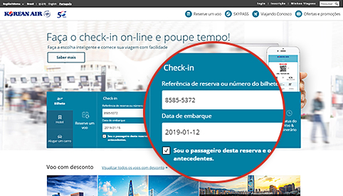
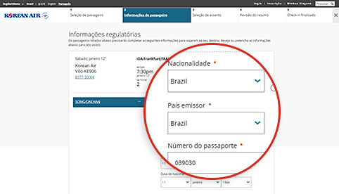
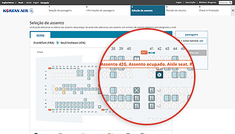
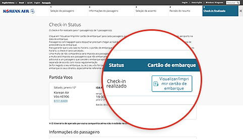

Procedimentos de check-in facilitados! Prepare-se para suas viagens sem estresse!
Check-in on-line / por celular
Economiza tempo para relaxar quando estiver no aeroporto.
Como usar
| Elegibilidade | Rotas de operação | Horário de check-in |
|---|---|---|
| Passageiros em voos da Korean Air com um bilhete eletrônico válido | Todas as rotas |
|
- (Referência 1) Voos do/para os EUA, Canadá, Reino Unido e Paris : De 24 horas a 1 hora de antecedência embarque
- As restrições para check-in on-line/por celular (Clique neste link para confirmar)
 Reserve tempo suficiente para a verificação de segurança e outros procedimentos (conclua todos os procedimentos 1 hora antes do embarque para voos internacionais e 20 minutos antes do embarque para voos domésticos na Coreia)
Reserve tempo suficiente para a verificação de segurança e outros procedimentos (conclua todos os procedimentos 1 hora antes do embarque para voos internacionais e 20 minutos antes do embarque para voos domésticos na Coreia)
Realizando o check-in

-

Step 1 Procurar uma reserva
- É mais fácil realizar o check-in se você registrou o número de passageiro frequente durante a reserva.
- Se a reserva não for exibida, digite o código da reserva ou o número do bilhete, depois, digite a data de embarque e o nome.
Você pode iniciar o check-in na Web inserindo o número da reserva, a data de partida e o nome do passageiro, se você não for um não-membro do check-in na área de reserva de ingressos da tela principal da página inicial.
-

Step 2 Inserir as informações do documento de viagem (voos internacionais)
- Dados do passaporte e documentos de viagem necessários devem ser inseridos corretamente. Pode ser que você não consiga realizar o check-in dependendo dos resultados da pré-verificação de segurança na cidade de embarque/desembarque, caso você não insira informações válidas.
- A opção de check-in por celular permite registrar facilmente seus dados do passaporte usando a função escanear passaporte.
As informações do passaporte, como nacionalidade, país / região emissora do passaporte, número do passaporte, etc., podem ser inseridas na segunda tela de inserção de informações do passageiro no momento do check-in pela Web.
-

Step 3 Atribuição de assento
- Selecione seu assento de preferência.
- Faça o login com sua ID (ou senha para não membros) se deseja alterar seu número de assento. (No entanto, os dados do SKYPASS devem ser salvos antes do login.)
Etapa 3 do Check-in pela Web Você pode verificar as informações de cada assento, como o número do assento, a localização e as características do assento, e selecionar o assento desejado na tela de atribuição do assento.
-

Step 4 Finalizar o check-in
- Clique em “Visualizar/Imprimir cartão de embarque” para cada passageiro para imprimir o cartão de embarque.
- É possível reemitir seu cartão de embarque e cancelar o check-in antes do prazo limite de check-in on-line.
Web Check-in Passo 5 Na tela Completar check-in, você pode verificar o status de check-in da web ou emitir seu cartão de embarque para o PC.
Procedimentos no aeroporto após o check-in on-line
-

01 Realizar o check-in on-line e obter o cartão de embarque
- Tenha seu cartão de embarque em mãos (cartão de embarque digital ou impresso) e apresente-o no aeroporto na data de embarque.
-

02 Chegar no aeroporto
Para o passageiro com o cartão de embarque
- Sem bagagem para despachar : Prossiga diretamente ao concourse com seu cartão de embarque em mãos, sem parar no balcão de atendimento.
-
Com bagagem para despachar : Despache sua bagagem no balcão (Referência 2) indicado para check-in on-line e siga para o concourse.
(Referência 2) No Aeroporto de Incheon, é fácil e rápido despachar sua bagagem no balcão exclusivo para despacho de bagagem(D1 a D17, E1 a E17).
Para passageiros com voucher para troca
- Obtenha seu cartão de embarque no balcão designado para check-in on-line. Também é possível despachar sua bagagem enquanto obtém seu cartão de embarque.
-

03 Inspeção de segurança e imigração
- Passageiros e itens pessoais serão inspecionados pela equipe de segurança para garantir a segurança dos viajantes e da aeronave.
- Traga um passaporte válido e seus documentos de viagens (visto), conforme exigido pelos países de embarque e desembarque, e prossiga à Imigração.
-

04 Embarcar na aeronave
- Você deve ter seu próprio cartão de embarque.